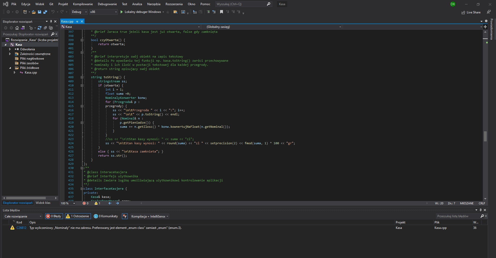
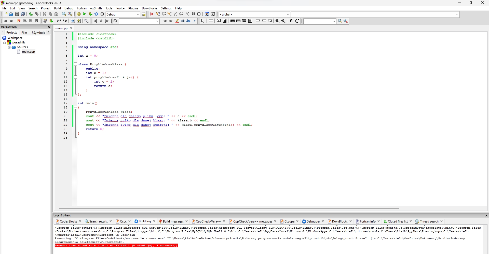

×

Witam serdecznie, Dawid z tej strony...
a to jest poradnik c++!
Jeżeli masz problem z c++ do dobrze trafiłeś. Chętnie wyjaśnię wszelakie podstawowe (i nie
tylko)
zagadnienia
Jeżeli Cię to nie interesuje, wracaj to scrollowania Tik-toków, jak zmienisz zdanie wciąż
tu jednak będę :D
Zainteresowałem Cię? Dobrze. Zacznijmy od najważniejszego. Pozbądź się z kompa Dev-c++.
Jest to program który operuje na standardzie z 1998 roku!
Używanie tego programu jest samo ograniczaniem i nawet niektóre podstawowe teraz techniki są
nieosiągalne z tym programem. To czego w takim razie używać?
 Visual Studio
Visual Studio

Okno programu Visual Studio 2019
Visual studio w wersji 20xx umożliwia utworzenie i kompilację projektu, obługuje najnowsze standardy
c++. Niestety najpierw trzeba założyć konto Microsoft. Możesz go pobrać tutaj
by móc używać tego programu.
CodeBlocks

Okno programu CodeBlocks w wersji 20.03
CodeBlocks jest darmowym opensource'owym programem, który umożliwia utworzenie i kompilacje nowego
projektu. Jest następcą znanego Ci Dev-c++ i sam dziwię się,
dlaczego nie używamy go na zajęciach z programiowania. Jest znacznie bardziej zawansowany i wygodniejszy
w użyciu. Nawet są podpowiedzi! Dla nowicjuszy jest to baaaaardzi przydatna opcja!
Program można pobrać tutaj.